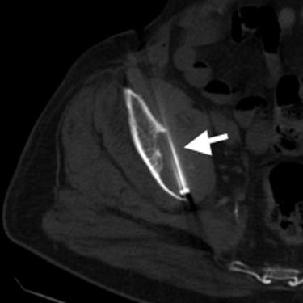

Jeffrey P. Guenette / Scientific Abstracts
CT-guided Percutaneous Radiofrequency Ablation of Painful Bone Metastases
Guenette JP, Hanna L, Ahrar K, Lopez-Ben RR, Dupuy DE
Radiological Society of North America 97th Scientific Assembly and National Meeting
December 1, 2011, Chicago, IL
 Abstract:
PURPOSE: To identify which initial and follow-up imaging features are associated with significant changes in patient pain, relief, and mood following palliative CT-guided radiofrequency ablation of solitary painful bone metastases.
METHOD AND MATERIALS: As part of the ACRIN 6661 multicenter cooperative group trial, radiofrequency ablation was performed on bone lesions with clinical and imaging features of metastatic disease in 55 patients. The lesions were solitary, measured no more than 8cm, and were the source of persistent intractable pain despite active treatment with narcotics. Follow-up, contrast-enhanced CT and/or MRI were performed at 1 and 3 months. On pretreatment, 1 month, and 3 month follow-up images, the following were assessed: maximum tumor size in three planes, tumor volume, bone-tumor interface (BTI), distance to major neurovascular (NV) bundles within 2cm, pathological fracture. On the post treatment images the maximum ablation zone size, percent of tumor ablated, percent of BTI ablated, enhancing rim width and regularity, ablation into NV bundle, general tumor progression, and tumor progression at the BTI were assessed. Pain and patient mood were measured using a modified Memorial Pain Assessment Card (MPAC). Preliminary statistical
analysis was performed using a univariate regression analysis in which the change in score from pre-RFA to 1-month post-RFA for a particular dimension of the MPAC was modeled as a linear function of each variable measured individually.
RESULTS: The distance to the nearest NV bundle for tumors !2cm from a major NV bundle significantly correlated with the effect of RFA on pain: post-RFA pain decreased 24% (95% CI: 3% to 44%) for each centimeter of tumor distance from the NV bundle. Additional correlations, including lower levels of reported pain following ablation of smaller tumors, are apparent but may not be statistically significant.
CONCLUSION: RFA reduction of pain from bone metastases is more effective with increased distance between the tumor and nearby major neurovascular bundles when a tumor is within 2cm of a major NV bundle. Other parameters may correlate with efficacy. Further statistical analysis is required. Work funded by grants U01 CA079778 and U01 CA080098.
CLINICAL RELEVANCE/APPLICATION: Identifying imaging features associated with radiofrequency ablation effects on bone metastasis pain is important to future patient selection and to expanded use of this modality in palliative care.
Return to Home Page